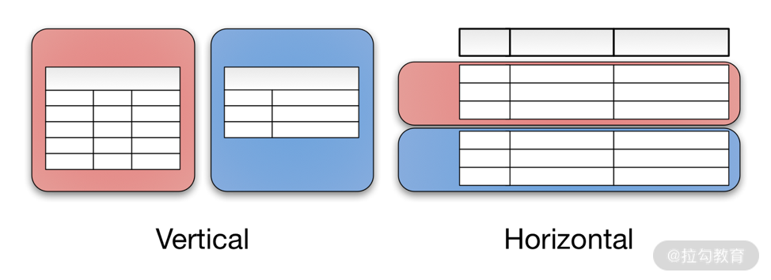
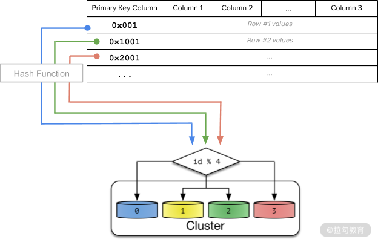
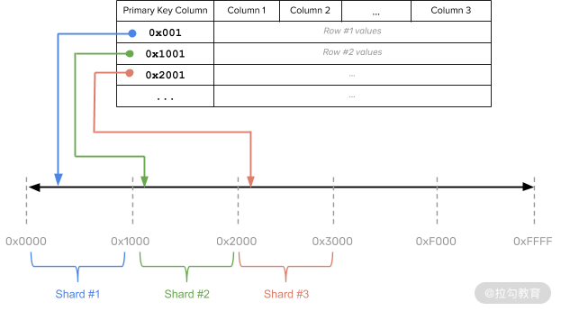
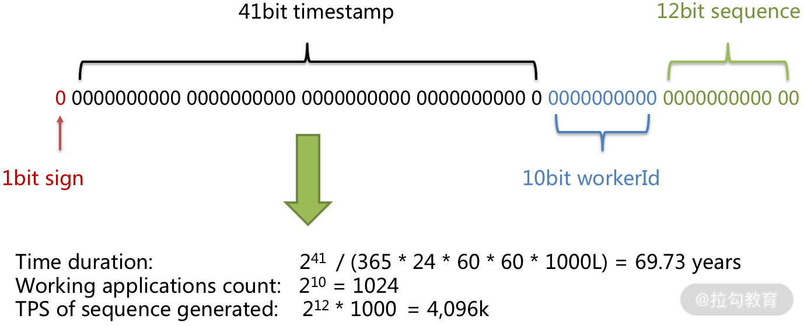
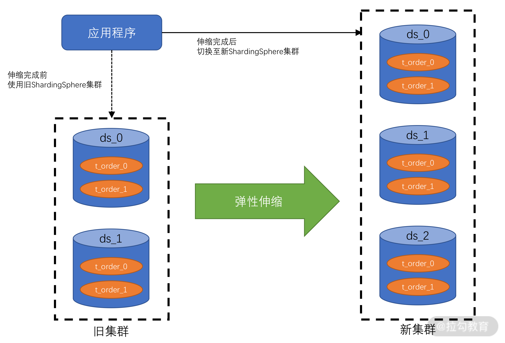
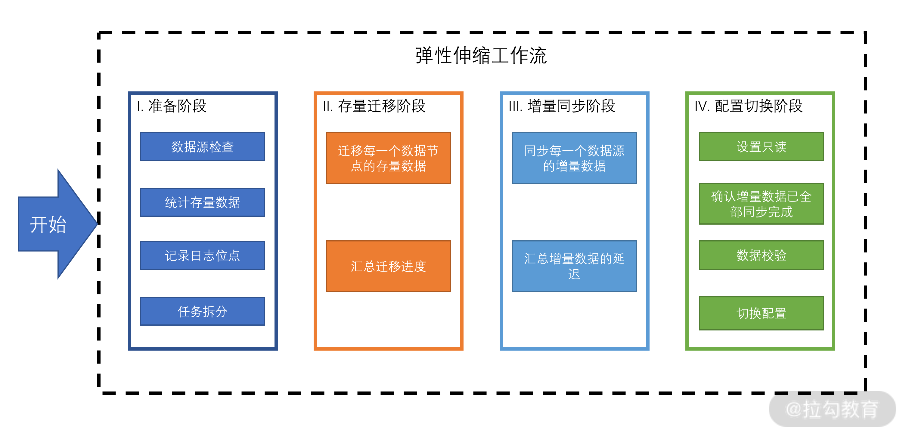
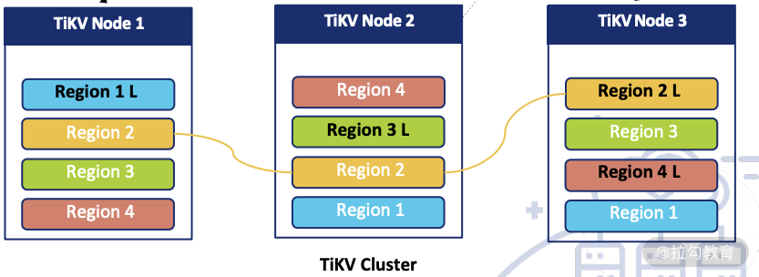
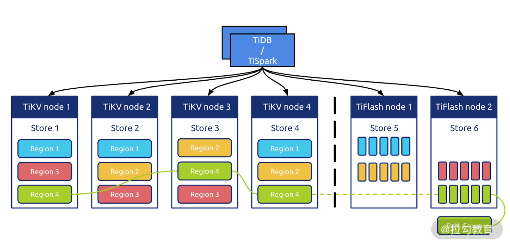

- 00 开篇词 吃透分布式数据库，提升职场竞争力.md.html
- 01 导论：什么是分布式数据库？聊聊它的前世今生.md.html
- 02 SQL vs NoSQL：一次搞清楚五花八门的“SQL”.md.html
- 03 数据分片：如何存储超大规模的数据？.md.html
- 04 数据复制：如何保证数据在分布式场景下的高可用？.md.html
- 05 一致性与 CAP 模型：为什么需要分布式一致性？.md.html
- 06 实践：设计一个最简单的分布式数据库.md.html
- 07 概要：什么是存储引擎，为什么需要了解它？.md.html
- 08 分布式索引：如何在集群中快速定位数据？.md.html
- 09 日志型存储：为什么选择它作为底层存储？.md.html
- 10 事务处理与恢复（上）：数据库崩溃后如何保证数据不丢失？.md.html
- 11 事务处理与恢复（下）：如何控制并发事务？.md.html
- 12 引擎拓展：解读当前流行的分布式存储引擎.md.html
- 13 概要：分布式系统都要解决哪些问题？.md.html
- 14 错误侦测：如何保证分布式系统稳定？.md.html
- 15 领导选举：如何在分布式系统内安全地协调操作？.md.html
- 16 再谈一致性：除了 CAP 之外的一致性模型还有哪些？.md.html
- 17 数据可靠传播：反熵理论如何帮助数据库可靠工作？.md.html
- 18 分布式事务（上）：除了 XA，还有哪些原子提交算法吗？.md.html
- 19 分布式事务（下）：Spanner 与 Calvin 的巅峰对决.md.html
- 20 共识算法：一次性说清楚 Paxos、Raft 等算法的区别.md.html
- 21 知识串讲：如何取得性能和可扩展性的平衡？.md.html
- 22 发展与局限：传统数据库在分布式领域的探索.md.html
- 23 数据库中间件：传统数据库向分布式数据库的过渡.md.html
- 24 现状解读：分布式数据库的最新发展情况.md.html
- 加餐1 概念解析：云原生、HTAP、图与内存数据库.md.html
- 加餐2 数据库选型：我们该用什么分布式数据库？.md.html
03 数据分片：如何存储超大规模的数据？
前两讲我们介绍了分布式数据库，以及各种 SQL 的发展脉络，那么从这一讲开始，我们就正式进入分布式数据库核心原理的学习。
随着互联网时代，特别是移动互联网的到来，形形色色的企业都在将自己的系统平台快速升级迭代，以此作为向互联网转型的一部分。
在此背景下，这类应用平台所依赖的数据库系统就需要支持突然增加的巨量交易数据，但是在这种情况下单体的数据库往往会很快过载，而用于扩展数据库最常见的技术手段就是“数据分片”。
因此这一讲，我将为你介绍什么是分片，以及如何将其用于扩展数据库。同时，我还会回顾常见分片架构的优缺点，以使用 TiDB 为例，和你探讨如何在分布式数据库中实现分片。
数据分片概论
分片是将大数据表分解为较小的表（称为分片）的过程，这些分片分布在多个数据库集群节点上。分片本质上可以被看作传统数据库中的分区表，是一种水平扩展手段。每个分片上包含原有总数据集的一个子集，从而可以将总负载分散在各个分区之上。
数据分片的方式一般有两种。
- 水平分片：在不同的数据库节点中存储同一表的不同行。
- 垂直分片：在不同的数据库节点中存储表不同的表列。
如下图所示，水平和垂直这两个概念来自原关系型数据库表模式的可视化直观视图。

图 1 可视化直观视图
分片理念其实来源于经济学的边际收益理论：如果投资持续增加，但收益的增幅开始下降时，被称为边际收益递减状态。而刚好要开始下降的那个点被称为边际平衡点。
该理论应用在数据库计算能力上往往被表述为：如果数据库处理能力遇到瓶颈，最简单的方式是持续提高系统性能，如更换更强劲的 CPU、更大内存等，这种模式被称为垂直扩展。当持续增加资源以提升数据库能力时，垂直扩展有其自身的限制，最终达到边际平衡，收益开始递减。
而此时，对表进行水平分片意味着可以引入更多的计算能力处理数据与交易。从而，将边际递减扭转为边际递增状态。同时，通过持续地平衡所有节点上的处理负载和数据量，分片模式还可以获得 1+1>2 的效果，即集群平均处理能力大于单节点处理能力。
这样就使得规模较小、价格便宜的服务器组成的水平扩展集群，可能比维护一台大型商用数据库服务器更具成本效益。这也是第一讲中“去 IOE 运动”的核心技术背景。
除了解决扩展难题，分片还可以缓解计划外停机，大大降低系统 RTO（目标恢复时间）。即使在计划内的停机期，如果没有分片的加持，数据库整体上还是处于不可访问状态的，这就无法满足业务上对 SLO（目标服务级别）的要求。
如果分片可以如我们所希望的那样正常工作，它就可以确保系统的高可用。即使数据库集群部分节点发生故障，只要其他节点在其中运行，数据库整体仍可对外提供服务。当然，这还需要复制与一致性服务的保证，我们会在之后课时中进一步探讨。
总而言之，分片可以增加数据库集群的总容量并加快处理速度，同时可以使用比垂直扩展更低的成本提供更高的可用性。
分片算法
分片算法一般指代水平分片所需要的算法。经过多年的演化，其已经在大型系统中得到了广泛的实践。下面我将介绍两种最常见的水平分片算法，并简要介绍一些其他的分片算法优化思路。
哈希分片
哈希分片，首先需要获取分片键，然后根据特定的哈希算法计算它的哈希值，最后使用哈希值确定数据应被放置在哪个分片中。数据库一般对所有数据使用统一的哈希算法（例如 ketama），以促成哈希函数在服务器之间均匀地分配数据，从而降低了数据不均衡所带来的热点风险。通过这种方法，数据不太可能放在同一分片上，从而使数据被随机分散开。
这种算法非常适合随机读写的场景，能够很好地分散系统负载，但弊端是不利于范围扫描查询操作。下图是这一算法的工作原理。

图 2 哈希分片
范围分片
范围分片根据数据值或键空间的范围对数据进行划分，相邻的分片键更有可能落入相同的分片上。每行数据不像哈希分片那样需要进行转换，实际上它们只是简单地被分类到不同的分片上。下图是范围分片的工作原理。

图 3 范围分片
范围分片需要选择合适的分片键，这些分片键需要尽量不包含重复数值，也就是其候选数值尽可能地离散。同时数据不要单调递增或递减，否则，数据不能很好地在集群中离散，从而造成热点。
范围分片非常适合进行范围查找，但是其随机读写性能偏弱。
融合算法
这时我们应该意识到，以上介绍的哈希和范围的分片算法并不是非此即彼，二选一的。相反，我们可以灵活地组合它们。
例如，我们可以建立一个多级分片策略，该策略在最上层使用哈希算法，而在每个基于哈希的分片单元中，数据将按顺序存储。
这个算法相对比较简单且灵活，下面我们再说一个地理位置算法。
地理位置算法
该算法一般用于 NewSQL 数据库，提供全球范围内分布数据的能力。
在基于地理位置的分片算法中，数据被映射到特定的分片，而这些分片又被映射到特定区域以及这些区域中的节点。
然后在给定区域内，使用哈希或范围分片对数据进行分片。例如，在美国、中国和日本的 3 个区域中运行的集群可以依靠 User 表的 Country_Code 列，将特定用户（User）所在的数据行映射到符合位置就近规则的区域中。
那么以上就是几种典型的分片算法，下面我们接着讨论如何将分片算法应用到实际的场景中。
手动分片 vs 自动分片
手动分片，顾名思义，就是设置静态规则来将数据根据分片算法分散到数据库节点。这一般是由于用户使用的数据库不支持自动的分片，如 MySQL、Oracle 等。这个问题可以在应用层面上做数据分片来解决，也可以使用简单的数据库中间件或 Proxy 来设置静态的分片规则来解决。
手动分片的缺点是数据分布不均匀。数据分布不均可能导致数据库负载极其不平衡，从而使其中一些节点过载，而另一些节点访问量较少。
因此，最好避免在部分节点上存储过多数据，否则会造成这些节点成为访问热点，进而导致其运行速度降低，甚至使服务器崩溃。此外，当整体数据集过小时，也会导致这个问题，因为集群中只有部分节点才有数据。
这在开发和测试环境中是可以接受的，但在生产环境中是不可以接受的。因为数据分布不均，热点以及将数据存储在太少的分片上，都会导致数据库集群内的节点计算资源耗尽，造成系统不稳定。
但如果精心设计，且数据分布变化不大，采用手动分片也是一个较为简单、维护成本低廉的方案。
而使用自动分片意味着计算节点与分片算法可以相互配合，从而使数据库进行弹性伸缩。
使用基于范围的分片很容易实现自动分片：只需拆分或合并每个分片。
假设现在有一个范围为 [1，100）的分片，我们想要将它分裂为两个范围，先选择 50 作为切分点；然后将该区域分为 [1，50）和 [50，100）之后，将两个区域移动到两台不同的数据库节点中，从而使系统负载达到平衡。
基于范围的分片可能会带来读取和写入热点，我们可以通过拆分和移动分片消除这些热点。
而使用基于哈希的分片的系统实现自动分片代价很高昂。我们现在使用上面图 1 中的例子来说明。
当前系统有 4 个节点，然后添加一个新的数据库节点。在哈希函数中，“ n”从 4 更改为 5，这会导致较大的系统抖动。尽管你可以使用像 Ketama 这样的一致性哈希算法来尽可能减少系统抖动，但数据迁移与再平衡操作还是必须要有的。
这是因为在应用哈希函数后，数据是随机分布的，并且调整散列算法肯定会更改大多数数据的分布情况。
自动分片是分布式数据库的主流功能，所有主要的分布式数据库，甚至数据库中间件都在尝试自动分片。下面我将结合几个案例来说明。
分片算法案例
数据分片是数据库中间件的核心功能，且该领域开源项目较多。我这里以 Apache ShardingShpere 的分片内容为例，向你介绍分片算法的相关实践案例。
分片键生成
ShardingShpere 首先提供了分布式的主键生成，这是生成分片键的关键。由于分布式数据库内一般由多个数据库节点参与，因此基于数据库实例的主键生成并不适合分布式场景。
常用的算法有 UUID 和 Snowfalke 两种无状态生成算法。
UUID 是最简单的方式，但是生成效率不高，且数据离散度一般。因此目前生产环境中会采用后一种算法。下图就是用该算法生成的分片键的结构。

图 4 分片键结构
其中有效部分有三个。
- 时间戳：算法类似 UNIX 时间的表示形式，它是从一个特定时间开始到当前时间点之间的毫秒数，本案例中该算法可以使用近 70 年。
- 工作节点 ID：保证每个独立工作的数据库节点不会产生重复的数据。
- 访问序列：在同一个进程、同一个毫秒内，保证产生的 ID 不重复。
灵活的分片算法
为了保证分片计算的灵活性，ShardingShpere 提供了标准分片算法和一些工具，帮助用户实现个性化算法。
- PreciseShardingAlgorithm 配合哈希函数使用，可以实现哈希分片。RangeShardingAlogrithm 可以实现范围分片。
- 使用 ComplexShardingStrategy 可以使用多个分片键来实现融合分片算法。
- 有的时候，数据表的分片模式不是完全一致。对于一些特别的分片模式，可以使用 HintShardingStrategy 在运行态制定特殊的路由规则，而不必使用统一的分片配置。
- 如果用户希望实现诸如地理位置算法等特殊的分片算法，可以自定义分片策略。使用 inline 表达式或 Java 代码进行编写，前者基于配置不需要编译，适合简单的个性化分片计算；后者可以实现更加复杂的计算，但需要编译打包的过程。
用户通过以上多种分片工具，可以灵活和统一地制定数据库分片策略。
自动分片
ShardingShpere 提供了 Sharding-Scale 来支持数据库节点弹性伸缩，该功能就是其对自动分片的支持。下图是自动分片功能展示图，可以看到经过 Sharding-Scale 的特性伸缩，原有的两个数据库扩充为三个。

图 5 自动分片功能展示
自动分片包含下图所示的四个过程。

图 6 自动分片过程
从图 6 中可以看到，通过该工作量，ShardingShpere 可以支持复杂的基于哈希的自动分片。同时我们也应该看到，没有专业和自动化的弹性扩缩容工具，想要实现自动化分片是非常困难的。
以上就是分片算法的实际案例，使用的是经典的水平分片模式。而目前水平和垂直分片有进一步合并的趋势，下面要介绍的 TiDB 正代表着这种融合趋势。
垂直与水平分片融合案例
TiDB 就是一个垂直与水平分片融合的典型案例，同时该方案也是 HATP 融合方案。
其中水平扩展依赖于底层的 TiKV，如下图所示。

图 7 TiKV
TiKV 使用范围分片的模式，数据被分配到 Region 组里面。一个分组保持三个副本，这保证了高可用性（相关内容会在“05 | 一致性与 CAP 模型：为什么需要分布式一致性？”中详细介绍）。当 Region 变大后，会被拆分，新分裂的 Region 也会产生多个副本。
TiDB 的水平扩展依赖于 TiFlash，如下图所示。

图 8 TiFlash
从图 8 中可以看到 TiFlash 是 TiKV 的列扩展插件，数据异步从 TiKV 里面复制到 TiFlash，而后进行列转换，其中要使用 MVCC 技术来保证数据的一致性。
上文所述的 Region 会增加一个新的异步副本，而后该副本进行了数据切分，并以列模式组合到 TiFlash 中，从而达到了水平和垂直扩展在同一个数据库的融合。这是两种数据库引擎的融合。
以上的融合为 TiDB 带来的益处主要体现在查询层面，特别对特定列做聚合查询的效率很高。TiDB 可以很智能地切换以上两种分片引擎，从而达到最优的查询效率。
总结
这一讲到这里就告一段落了。先是详细介绍了分片的原理，以及多种常用的分片技术；而后分析了手动分片与自动分片的区别，要知道数据分片的未来是属于自动分片的。
最后，我通过两个著名的开源项目介绍了分片技术是如何应用到分布式数据库中的。其中 TiDB 所展示的 HATP 融合两个分片模式的技术路线，可以被看作是未来分片模式发展的趋势。
教学相长
这里给你留一个课后思考题。
设计一个复杂分片算法，可以在一段时间内扩展节点不必迁移数据，同时保证不产生热点。